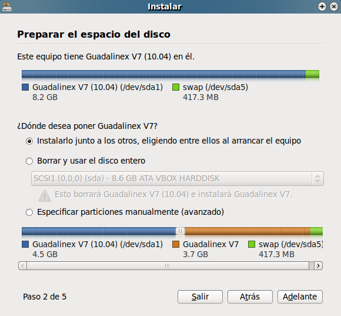
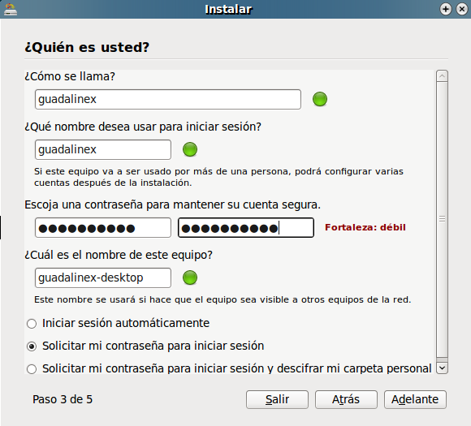
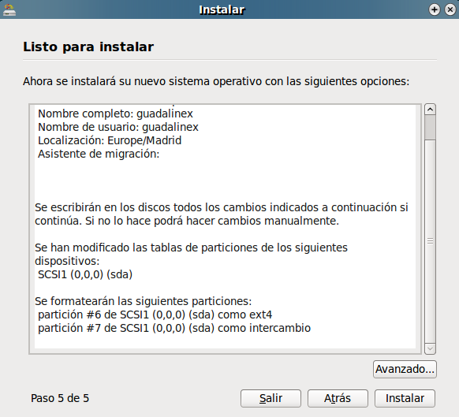
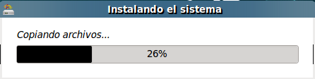

Si quieres instalar Guadalinex en tu ordenador y no quieres borrar el sistema operativo que ya tienes instalado, no te preocupes, pueden convivir los dos sistemas en un mismo disco duro sin que haya interferencias, Guadalinex te permite hacer particiones, es decir, dividir tu disco duro en trocitos y en cada uno de ellos alojar un sistema operativo, así cada uno tiene su espacio.
Vamos a enseñarte como se hacen estas particiones a través del instalador.
Una vez que has seleccionado en el instalador la opción Instalar Guadalinex te aparecerá una ventana con diferentes opciones de instalación:
Preparar el espacio del disco: tu ordenador detecta que hay otro sistema operativo instalado y te pregunta ¿dónde desea poner Guadalinex V7?, aquí debes marcar la casilla de verificación de la opción Instalarlo junto a los otros, eligiendo entre ellos al arrancar el equipo, para que el instalador te haga las particiones correctamente, y además, cuando enciendas tu ordenador puedas elegir en el menú de arranque con que sistema operativo quieres empezar la sesión.

A continuación, se abre una ventana con un aviso de seguridad para que guardes todos los cambios que has hecho antes de proceder a las particiones del disco duro.
Si tu intención es machacar o borrar el sistema operativo que ya está instalado para tener en tu ordenador sólo la V7 instalada deberás escoger la opción siguiente,Borrar y usar el disco entero.
¿Quién es usted?: Debes rellenar los datos sobre tu nombre, el nombre que vas a utilizar para comenzar la sesión, la contraseña, y el nombre del equipo.


Ya comienza la instalación de tu V7 y podrás ver el avance del proceso en una ventana que incluye una barra de carga del sistema.

El instalador ya hace las particiones por ti de forma automática, si no eres un usuario avanzado te recomendamos que NO utilices la opción de hacer particiones de forma manual.
Anterior: Instalando en un equipo que no tiene ningún sistema operativo.
Siguiente: Asistente de migración (AMIGU).
{kind=link}
{kind=link}
{kind=link}
{kind=link}